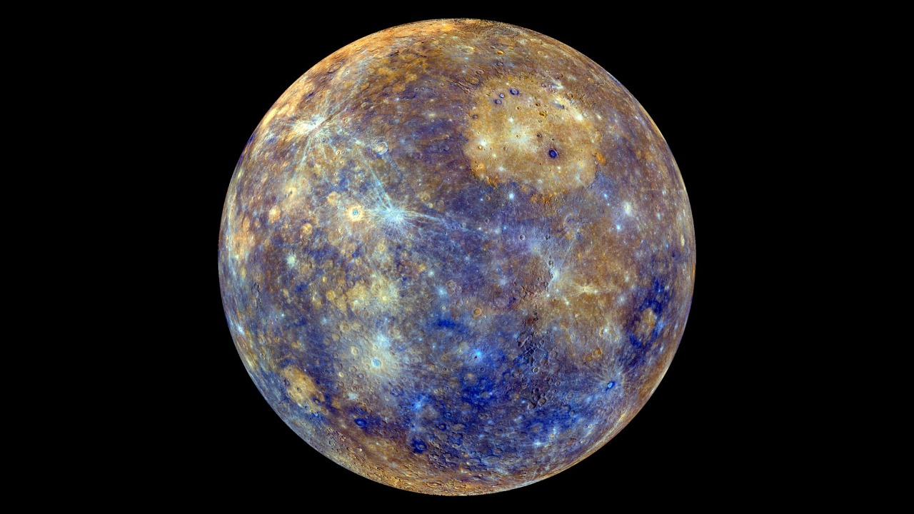
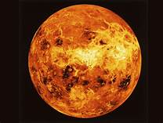
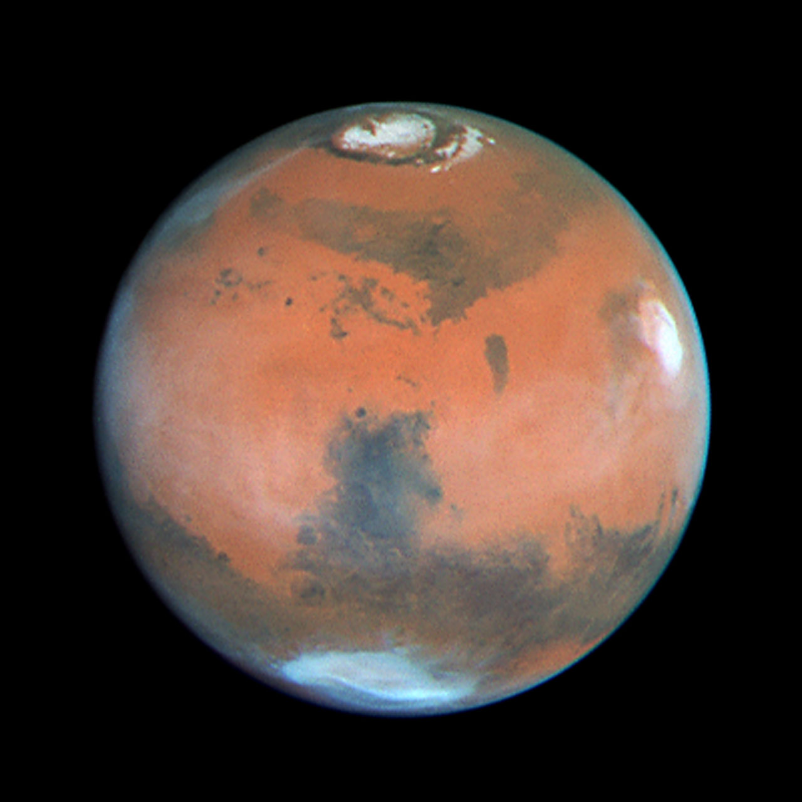
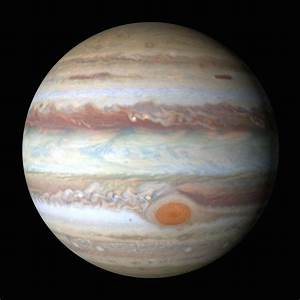
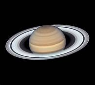
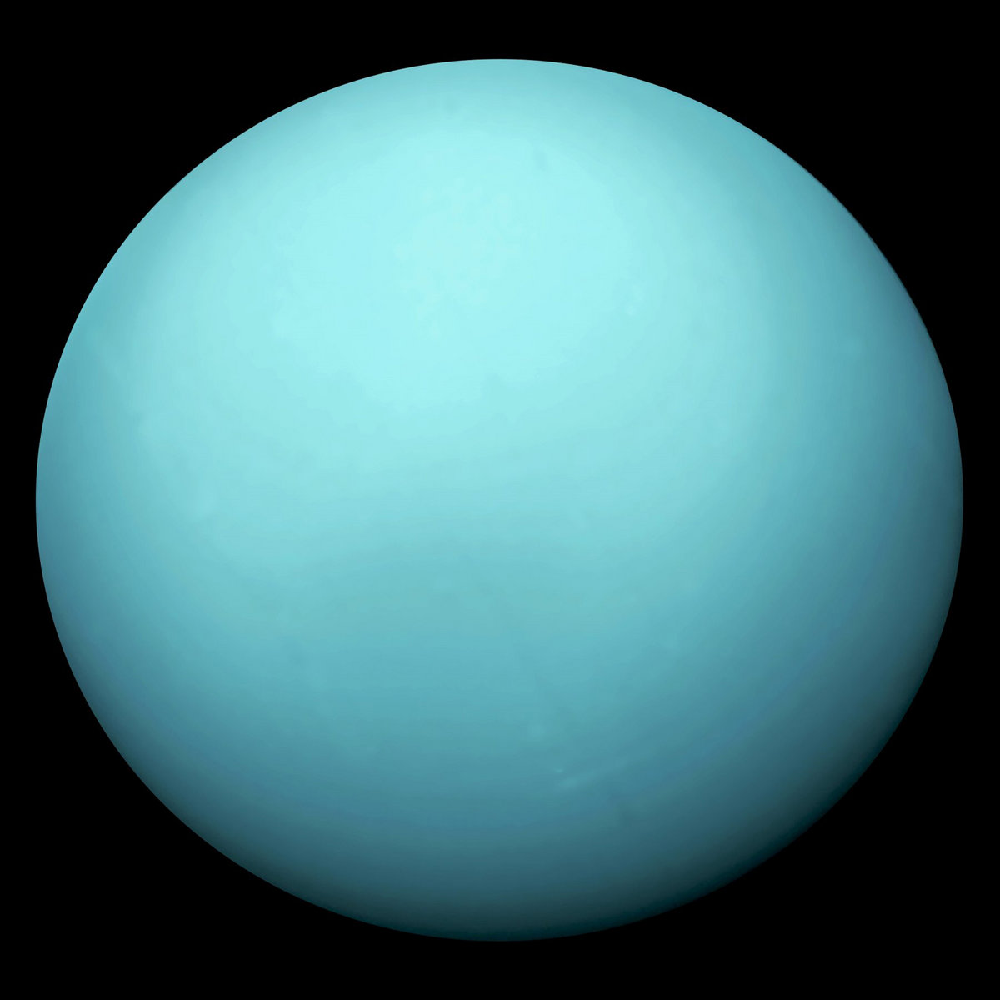
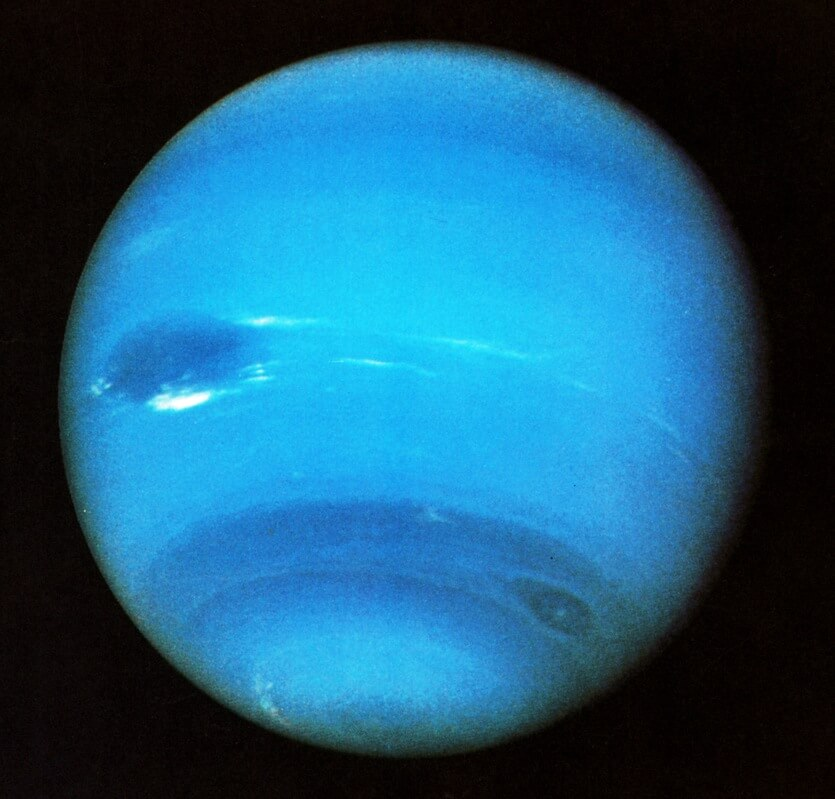

SPACE THE TREASURE
SOLAR SYSTEM
WHAT IS SOLAR SYSTEM? (OUR SOLAR SYSTEM)
It is a collection of celestial bodies like planets and their moons which orbit around the sun,
together with smaller bodies like asteroids, meteoroids, and comets.

Here are some features of all the planets in our Solar System-
1.Mercury-Smallest planet in our solar system .

2.Venus-Hottest planet in the solar system.

3.Earth-The only habitable planet in the solar system.

4.Mars-It has the largest dust storms in the solar system.

5.Jupiter-Biggest planet in the solar system

6.Saturn-It has the most visible rings in the solar system.

7.Uranus-It is the only planet that is named after a Greek god,not after a Roman god,like others.
8.Neptune-It has the strongest surface winds in the solar system..
Main Page